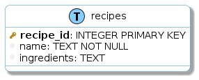
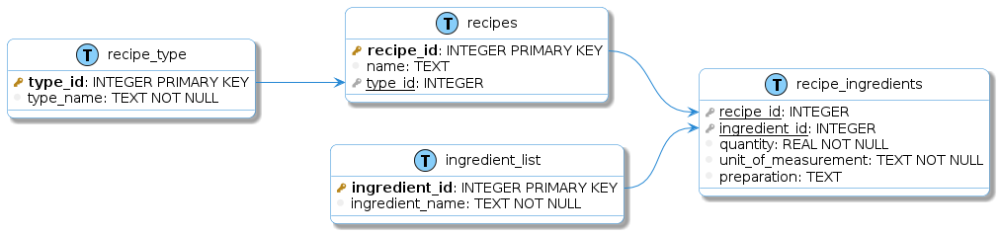

Examples
The best way to understand how this works, and what is useful for, it’s probably with some examples, so here we go:
CSV input format
The CSV should be just a simple file, with no headers, where each line represents an attribute of a table.
For example, take the following data:
Just 1 table
recipe_id |
name |
ingredients |
|---|---|---|
1 |
Chimichurri |
1/2 Cup Oil
2 tablespoons red wine vinegar
1/2 cup finely chopped parsley
1 tablespoon finely chopped chili
1 teaspoon salt
(…)
|
The CSV that represents this table (example1.csv) would state
recipes, recipe_id, integer primary key
recipes, name, text not null
recipes, ingredients, text
As you can see, each line is composed by three parameters:
[TABLE NAME] = recipes[ATTRIBUTE NAME] = recipe_id[BASIC SQLITE DEFINITION] = integer primary key[TABLE NAME] = recipes[ATTRIBUTE NAME] = name[BASIC SQLITE DEFINITION] = text not null[TABLE NAME] = recipes[ATTRIBUTE NAME] = ingredients[BASIC SQLITE DEFINITION] = textWarning
Currently, the way to indicate that the attribute is a key, is:
Primary Key: primary key, primary_key, pk, pkey
Foreign Key: foreign key, foreign_key, fk, fkey
Any other term used may rise to incorrect outputs (missing relationships)
Then, after running in the terminal:
python dbsketcher/run.py examples/example1.csv
We’ll get two output files (and a log):
CREATE TABLE IF NOT EXISTS recipes (
recipe_id INTEGER PRIMARY KEY,
name TEXT NOT NULL,
ingredients TEXT
);
@startuml
left to right direction
skinparam roundcorner 15
skinparam shadowing true
skinparam handwritten false
skinparam class {
BackgroundColor white
ArrowColor #2688d4
BorderColor #2688d4
}
!define table(x) entity x << (T, LightSkyBlue) >>
!define primary_key(x) <b><color:#b8861b><&key></color> x</b>
!define foreign_key(x) <color:#aaaaaa><&key></color> <u>x</u>
!define column(x) <color:#efefef><&media-record></color> x
!define column_fk(x) <color:#efefef><&media-record></color> <u>x</u>
table( recipes ) {
primary_key( recipe_id ): INTEGER PRIMARY KEY
column( name ): TEXT NOT NULL
column( ingredients ): TEXT
}
@enduml
That renders to:
{kind=link}
Just 1 table with multiple items
recipe_id |
name |
ingredient |
|---|---|---|
1 |
Chimichurri |
1/2 Cup Oil |
1 |
Chimichurri |
2 tablespoons red wine vinegar |
1 |
Chimichurri |
1/2 cup finely chopped parsley |
1 |
Chimichurri |
1 tablespoon finely chopped chili |
1 |
Chimichurri |
1 teaspoon salt |
1 |
Chimichurri |
(…) |
Since the information that the CSV file contains are the columns (attributes) names, the table to where they belong and the sql syntax that generates them, the ONLY difference in this file would be the name of the third column: as we now denormalized the table a little bit, we now have an entry (row) for each ingredient, so we changed ingredients by ingredient (without the last “s”)
recipes, recipe_id, integer primary key
recipes, name, text not null
recipes, ingredient, text
So the other files would change in a similar way.
2 tables
recipe_id (primary_key) |
name |
|---|---|
1 |
Chimichurri |
ingredient_id (primary_key) |
ingredient |
recipe_id (foreign_key) |
|---|---|---|
1 |
1/2 Cup Oil |
1 |
2 |
2 tablespoons red wine vinegar |
1 |
3 |
1/2 cup finely chopped parsley |
1 |
4 |
1 tablespoon finely chopped chili |
1 |
5 |
1 teaspoon salt |
1 |
6 |
(…) |
(…) |
Now the recipe_id attribute is not only the primary_key of the first table (recipes), but it’s also the foreign_key of the second table (ingredients)
The CSV (example3.csv) now does have some ‘major’ changes:
recipes, recipe_id, integer primary key
recipes, name, text not null
ingredients, ingredient_id, integer primary key
ingredients, ingredient, text not null
ingredients, recipe_id, integer foreign key (recipes)
And the ERD diagram (example3.uml) is transformed to:

See in PlantUML server (and the script’s output)
Several tables
recipe_id (primary_key) |
name |
type_id (foreign_key) |
|---|---|---|
1 |
Chimichurri |
2 |
2 |
Criolla |
2 |
3 |
Flan |
5 |
type_id (primary_key) |
type_name |
|---|---|
1 |
Starter |
2 |
Dressing |
3 |
Main course |
4 |
Side dish |
5 |
Dessert |
recipe_id (foreign_key) |
ingredient_id (foreign_key) |
quantity |
unit_of_measurement |
preparation |
|---|---|---|---|---|
1 |
1 |
1/2 |
Cup |
|
1 |
2 |
2 |
tablespoons |
|
1 |
3 |
1/2 |
Cup |
Finely chopped |
ingredient_id (primary_key) |
ingredient_name |
|---|---|
1 |
Sunflower Oil |
2 |
Red wine vinegar |
3 |
Parsley |
4 |
Chili |
5 |
Salt |
To generate an ERD diagram, the input could be (example4.csv):
recipes, recipe_id, integer primary key
recipes, name, text
recipes, type_id, integer foreign key (recipe_type)
recipe_type, type_id, integer primary key
recipe_type, type_name, text not null
recipe_ingredients, recipe_id, integer foreign key (recipes)
recipe_ingredients, ingredient_id, integer foreign key (ingredient_list)
recipe_ingredients, quantity, real not null
recipe_ingredients, unit_of_measurement, text not null
recipe_ingredients, preparation, text
ingredient_list, ingredient_id, integer primary key
ingredient_list, ingredient_name, text not null
With this input, we get this output and the ERD diagram (example4.uml):
{kind=link}